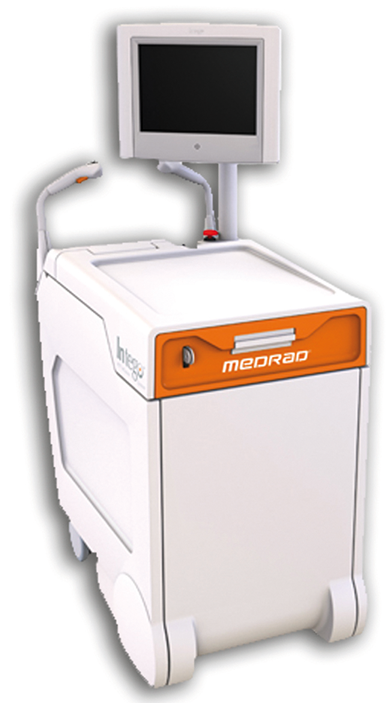
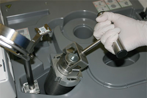

Intego™
PET INFUSION SYSTEM
 
CARACTERÍSTICAS:
• Administración de FDG exacta que se puede repetir ±2% de la dosis medida.
• Calibrador de dosis integrado con control de líquidos y tecnología de administración inteligente.
• Fórmulas que el usuario puede configurar para una dosificación basada en el peso.
• Preparación de dosis e infusión automatizadas en tiempo real directamente desde viales multidosis que contienen hasta 700 mCI.
• Tecnología de dosis a pedido a través de una pantalla táctil sencilla.
• Rango de dosis programable: 1 a 25 mCI.
• Reduce la exposición en la preparación y/o manipulación de las dosis.
• Protección eficaz: <2 mRem/hora a 12 pulgadas (30.5 cm) de toda superficie.
• Embalajes de envío, protecciones de viales y componentes desechables diseñados a medida para reducir al mínimo la exposición.
• La inyección de prueba y el caudal y presión bajos garantizan mayor seguridad al paciente.
• Menos pasos y menos tiempo de preparación de dosis e infusión.
• Registro de datos automatizado y sencillo.
• Funciones automatizadas de linealidad y control de calidad.
Registro: 1556E2010 SSA
DATOS COMPLEMENTARIOS: Para mayor información y asesoría técnica, favor de comunicarse a:

JUAMA, S.A. DE C.V.
Tels.: (55) 3098-9712, 3098-9727 y 3098-9737
Fax: (55) 5666-7694
e-mail: yalcala@juama.com
www.juama.com